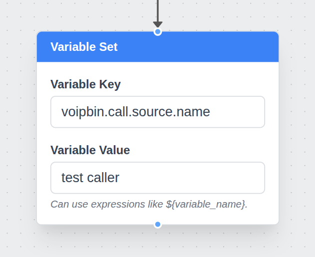
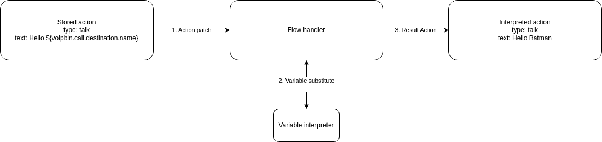

Variable¶
Define and manage flow variables that store dynamic data for use within automation workflows.
API Reference: Variable endpoints
Overview¶
Note
AI Context
Complexity: Low
Cost: Free – Variables are part of flow execution and do not incur separate charges.
Async: No. Variables are resolved synchronously at the time each flow action executes. There is no separate API endpoint for variables; they are used within flow action definitions.
VoIPBIN provides a powerful feature called Variables, enabling users to define, manipulate, and reference dynamic values throughout the lifecycle of a flow execution. Variables act as flexible placeholders for data that may change over time—such as user input, call metadata, or results from other applications—and can be injected into any compatible action in the flow.
This mechanism introduces contextual awareness and reactivity to flow logic, allowing users to build intelligent, data-driven call and messaging workflows that adapt in real time to current conditions and external inputs.
Note
AI Implementation Hint
Variable syntax is ${voipbin.<category>.<field>} for system variables and ${<custom_key>} for user-defined variables. If a variable does not exist or is null, the placeholder is replaced with an empty string. Variables are scoped to the current activeflow instance and do not persist after the flow ends.
{kind=link}

Using Variables in Flows¶
Variables can be used within flow actions by referencing them using the following syntax:
Hello, ${voipbin.call.destination.name}.
-> Hello, Batman.
At runtime, VoIPBIN resolves this placeholder and replaces it with the actual value stored in the variable. This process occurs at the time the action is executed, ensuring that the most up-to-date value is used—even if the variable was set earlier or modified by another action.
{kind=link}

Variables can be used in any field that supports templating. For example:
Setting dynamic text in TTS or message actions
Referencing phone numbers or user identifiers for routing or lookup
Embedding values in external API calls via webhooks
Controlling logic in conditional (branch) or fork actions
VoIPBIN supports nested variables and safely resolves deep paths like:
Hello, ${voipbin.invalid.variable}.
-> Hello, .
If a variable does not exist or is null, the placeholder will be replaced with an empty string unless otherwise specified.
Capturing and Setting Dynamic Values¶
Variables can be populated in several ways:
Automatically by the system¶
VoIPBIN injects key metadata about the call or message, such as:
voipbin.call.source.name
voipbin.call.destination.number
voipbin.message.source.number
By actions within the flow¶
Certain actions can store values as variables based on runtime results:
transcribe can store transcription results
recording can store the recording info
queueing can store the queueed call info.
Manually via variable_set action¶
Developers can explicitly define or override values in the flow.
{
"type": "variable_set",
"option": {
"key": "user_selected_option",
"value": "some_value"
}
}
Variables set during execution are scoped to the current flow instance, meaning they persist only during the lifetime of that flow unless explicitly passed elsewhere.
Integration with Applications¶
Each application in VoIPBIN can expose its own set of variables, which can be used by other parts of the flow. For example:
Call Application: Sets variables like caller name, number, codec, and session info.
SMS Application: Sets sender/receiver numbers and message content.
AI and Chatbot Actions: Store extracted entities, intent, and raw responses.
Webhook Application: Allows injection of third-party data as variables.
Email, Recording, or Summary Services: Can expose post-processing data such as email status or transcription content.
Variables act as a shared communication layer between applications. This allows a webhook that receives CRM data to feed into an AI chatbot, or enables a transcription result to be emailed after a call ends—all within the same flow logic.
Best Practices and Considerations¶
Always validate input: Use branch or conditional logic to handle cases where variables may be missing or malformed.
Avoid name collisions: Prefer namespaced keys (e.g., user.profile.email) to reduce risk of overwriting important data.
Debugging: Use logging or flow monitoring to inspect variable states at different stages.
Data persistence: Variables do not persist beyond a single flow execution unless saved externally (e.g., via webhook or external DB).
Troubleshooting¶
- Variable placeholder appears as literal text in output:
Cause: Incorrect variable syntax (e.g., missing
$prefix or curly braces).Fix: Use the exact format
${voipbin.<category>.<field>}for system variables or${<custom_key>}for user-defined variables. Verify the variable name is spelled correctly.
- Variable resolves to an empty string:
Cause: The variable does not exist, has not been set yet, or the referenced field is null.
Fix: Ensure the variable is set before the action that references it. Use a
variable_setaction earlier in the flow, or verify the system variable path is valid. Use branch/conditional logic to handle cases where the variable may be missing.
- Custom variable value not persisting across actions:
Cause: Variables are scoped to the current activeflow instance. If the flow restarts or a new activeflow is created, previous variables are lost.
Fix: Use a webhook or external storage to persist values that must survive across flow executions.
In conclusion, VoIPBIN’s Variable system is a core feature that enables dynamic, data-aware flows. By using variables effectively, developers can create tailored communication experiences that respond intelligently to the context of each interaction—whether through voice, messaging, or external integrations.
Variable¶
Note
AI Implementation Hint
All system variables use the voipbin. prefix. Variables are read-only unless explicitly set via the variable_set flow action. Use the ${voipbin.<category>.<field>} syntax to reference them in flow action text fields, webhook URLs, and conditional expressions.
Activeflow¶
voipbin.activeflow.id(UUID): The activeflow’s unique identifier. Obtained from the current flow execution context.voipbin.activeflow.reference_type(String): The type of resource that triggered this flow (e.g.,"call","message").voipbin.activeflow.reference_id(UUID): The ID of the resource that triggered this flow (e.g., the call ID or message ID).voipbin.activeflow.reference_activeflow_id(UUID): The parent activeflow’s ID when this flow was triggered from another flow.voipbin.activeflow.flow_id(UUID): The flow template ID used for this execution. Obtained fromGET /flows.
Flow¶
voipbin.flow.reference_data(String): Data passed as a reference when the flow was triggered. Contains contextual information from the triggering resource.
Call¶
Source address¶
voipbin.call.source.name(String): Source address’s display name.voipbin.call.source.detail(String): Source address’s detail information.voipbin.call.source.target(String): Source address’s target (e.g., phone number in E.164 format like+15551234567).voipbin.call.source.target_name(String): Source address’s target name.voipbin.call.source.type(String): Source address’s type (e.g.,"tel","sip").
Destination address¶
voipbin.call.destination.name(String): Destination address’s display name.voipbin.call.destination.detail(String): Destination address’s detail information.voipbin.call.destination.target(String): Destination address’s target (e.g., phone number in E.164 format).voipbin.call.destination.target_name(String): Destination address’s target name.voipbin.call.destination.type(String): Destination address’s type (e.g.,"tel","sip").
Others¶
voipbin.call.direction(enum string): Call’s direction ("incoming"or"outgoing").voipbin.call.master_call_id(UUID): The master call’s ID in a call chain.voipbin.call.digits(String): DTMF digits received during the call (e.g., from adigits_receiveaction).
Message¶
Source address¶
voipbin.message.source.name(String): Source address’s display name.voipbin.message.source.detail(String): Source address’s detail information.voipbin.message.source.target(String): Source address’s target (e.g., phone number in E.164 format).voipbin.message.source.target_name(String): Source address’s target name.voipbin.message.source.type(String): Source address’s type (e.g.,"tel").
Target destination address¶
voipbin.message.target.destination.name(String): Destination address’s display name.voipbin.message.target.destination.detail(String): Destination address’s detail information.voipbin.message.target.destination.target(String): Destination address’s target (e.g., phone number in E.164 format).voipbin.message.target.destination.target_name(String): Destination address’s target name.voipbin.message.target.destination.type(String): Destination address’s type (e.g.,"tel").
Message¶
voipbin.message.id(UUID): The message’s unique identifier.voipbin.message.text(String): The message’s text content.voipbin.message.direction(enum string): The message’s direction ("incoming"or"outgoing").
Queue¶
Queue info¶
voipbin.queue.id(UUID): The entered queue’s unique identifier. Obtained fromGET /queues.voipbin.queue.name(String): The entered queue’s name.voipbin.queue.detail(String): The entered queue’s detail description.
Queuecall info¶
voipbin.queuecall.id(UUID): The created queuecall’s unique identifier.voipbin.queuecall.timeout_wait(Integer): The queuecall’s wait timeout in seconds.voipbin.queuecall.timeout_service(Integer): The queuecall’s service timeout in seconds.
AI Call¶
voipbin.aicall.id(UUID): The created AI call’s unique identifier.voipbin.aicall.ai_id(UUID): The AI configuration ID used. Obtained fromGET /ais.voipbin.aicall.ai_engine_model(String): The AI engine model name (e.g.,"gpt-4").voipbin.aicall.confbridge_id(UUID): The conference bridge ID hosting the AI call.voipbin.aicall.language(String): The AI voice language (e.g.,"en-US").
AI Summary¶
voipbin.ai_summary.id(UUID): The created AI summary’s unique identifier.voipbin.ai_summary.reference_type(String): The type of resource summarized (e.g.,"call").voipbin.ai_summary.reference_id(UUID): The ID of the resource that was summarized.voipbin.ai_summary.language(String): The language of the summary (e.g.,"en-US").voipbin.ai_summary.content(String): The generated summary text content.
Recording¶
voipbin.recording.id(UUID): The created recording’s unique identifier. Obtained fromGET /recordings.voipbin.recording.reference_type(String): The type of resource being recorded (e.g.,"call").voipbin.recording.reference_id(UUID): The ID of the resource being recorded (e.g., the call ID).voipbin.recording.format(String): The recording format (e.g.,"wav","mp3").voipbin.recording.recording_name(String): The recording’s name.voipbin.recording.filenames(String): The recording’s output filenames.
Transcribe¶
voipbin.transcribe.id(UUID): The created transcribe’s unique identifier. Obtained fromGET /transcribes.voipbin.transcribe.language(String): The transcription language (e.g.,"en-US").voipbin.transcribe.direction(enum string): The transcription direction ("in","out", or"both").
Transcript¶
voipbin.transcript.id(UUID): The created transcript’s unique identifier.voipbin.transcript.transcribe_id(UUID): The parent transcribe’s unique identifier.voipbin.transcript.direction(enum string): The transcript’s direction ("in"for caller,"out"for callee).voipbin.transcript.message(String): The transcript’s text content.
Conference¶
voipbin.conference.id(UUID): The created conference’s unique identifier. Obtained fromGET /conferences.voipbin.conference.name(String): The conference’s name.voipbin.conference.type(enum string): The conference’s type ("connect"or"confbridge").voipbin.conference.status(enum string): The conference’s current status.
Confbridge¶
voipbin.confbridge.id(UUID): The created confbridge’s unique identifier.voipbin.confbridge.type(String): The confbridge’s type.voipbin.confbridge.status(enum string): The confbridge’s current status.
Agent¶
voipbin.agent.id(UUID): The agent’s unique identifier. Obtained fromGET /agents.voipbin.agent.name(String): The agent’s display name.voipbin.agent.detail(String): The agent’s detail description.voipbin.agent.status(enum string): The agent’s current status (e.g.,"available","busy").
Webhook Response¶
Variables available after a webhook_send action with sync=true.
voipbin.webhook.status_code(Integer): The HTTP response status code (e.g.,200,404).voipbin.webhook.body(String): The HTTP response body as a string.
Email¶
voipbin.email.id(UUID): The created email’s unique identifier.voipbin.email.status(enum string): The email’s delivery status.voipbin.email.subject(String): The email’s subject line.
Outdial¶
voipbin.outdial.id(UUID): The created outdial’s unique identifier. Obtained fromGET /outdials.voipbin.outdial.status(enum string): The outdial’s current status.
Outdialtarget¶
voipbin.outdialtarget.id(UUID): The created outdialtarget’s unique identifier.voipbin.outdialtarget.status(enum string): The outdialtarget’s current status.voipbin.outdialtarget.try_count(Integer): The current try count for this target.
Custom Variables¶
Custom variables can be set using the variable_set action. These variables are scoped to the current activeflow and persist until the flow ends.
Example of setting a custom variable:
{
"type": "variable_set",
"option": {
"key": "user.selected_option",
"value": "premium"
}
}
The variable can then be referenced as ${user.selected_option} in subsequent actions.